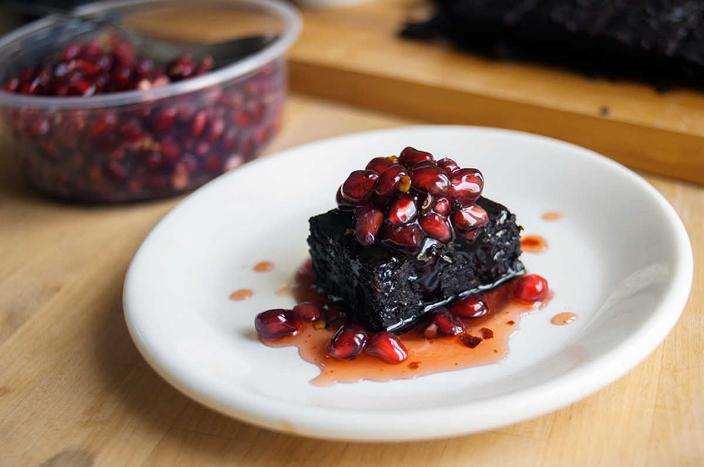

chili pomegranate brownies
24 servings — 60 minutes
Making brownies has been on my mind for some time, I finally settled for spicy brownies with a sweet and spicy pomegranate syrup!
I put a LOT of chili pepper flakes in these. I have a higher tolerance to it, but if you don't feel free to use less. You can omit the chilis in the batter, but I highly recommend infused the pomegranate syrup with some - it's delicious and won't be the same without it.
These were a big success.
I baked these brownies for Devine's birthday, and I've been re-making them ever since. You can vary the fruit juice for the topping, making reductions of fruit juices is very easy and it's so good, it makes desserts extra fancy without much effort. I cut them into 24 small squares, but these would look great in larger blocks too. Smaller portions means you can fool yourself into having some longer — I rather like that idea.
In this recipe I substituted half of the fat for puréed pumpkin, you could also use apple sauce or banana (banana tastes is strong though). Know that when baking brownies, you can only substitute half the amount of fat before it effects the texture.
 pumpkin 1/3 cup
pumpkin 1/3 cup flax seeds 3 tbsp
flax seeds 3 tbsp water 9 tbsp
water 9 tbsp canola oil 5 tbsp
canola oil 5 tbsp whole cane sugar 3/4 cup
whole cane sugar 3/4 cup cocoa powder 3/4 cup
cocoa powder 3/4 cup sea salt 1/4 tsp
sea salt 1/4 tsp all purpose flour 1/2 cup
all purpose flour 1/2 cup chili pepper flakes 2 tbsp
chili pepper flakes 2 tbsp cayenne pepper powder 1 tsp
cayenne pepper powder 1 tsp
brownies
- Preheat oven to 325F.
- Cut 1/3 cup of pumpkin, steam until softened and process into a purée.
- Put 3 tbsp of ground flax seeds in a bowl with 9 tbsp of water, let thicken for 5 minutes. Set aside.
- Put 5 tbsp of canola oil, 5 tbsp of pumpkin purée, 3/4 cup whole cane sugar, 3/4 cup cocoa powder and a 1/4 tsp salt in a pan over medium to low heat. Stir until the canola oil is melted, and all is well mixed.
- Stir in the flax 'egg', as well as the 2 tbsp of chili pepper flakes and 1 tsp of cayenne pepper powder. Add 1/2 cup of all purpose flour and mix well. Mixture should be very thick.
- Pour into a 8X8 baking dish lined with parchment papper. Flatten with the back of a spoon to even it out and bake for 25 minutes, or until knife comes out clean. Let cool. Cut in 24 small squares.
 pomegranate juice 2 cups
pomegranate juice 2 cups sugar 3/4 cup
sugar 3/4 cup- chili pepper flakes 1 tsp
- cayenne pepper powder 1 tsp
syrup
- Pour 2 cups of unsweetened pomegranate juice into a pot with 1 tsp chili pepper flakes and 1 tsp cayenne pepper powder. Bring to a boil, lower to medium-high heat and leave for up to 1h or until liquid has been reduced to 1 cup.
- Let cool, the syrup will thicken when cooled.
 pomegranate seeds 1 cup
pomegranate seeds 1 cup
topping
- Top brownies with fresh pomegranate seeds, and drizzle with the chili-infused syrup!